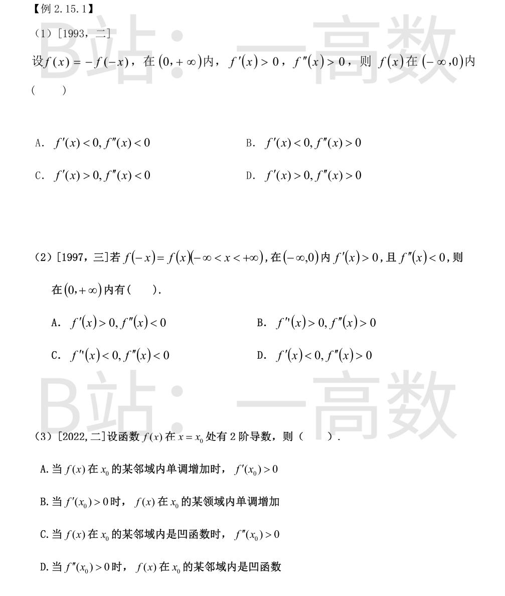
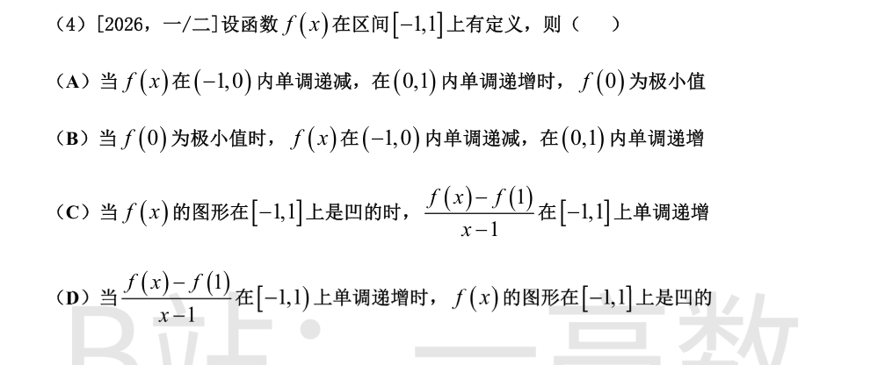
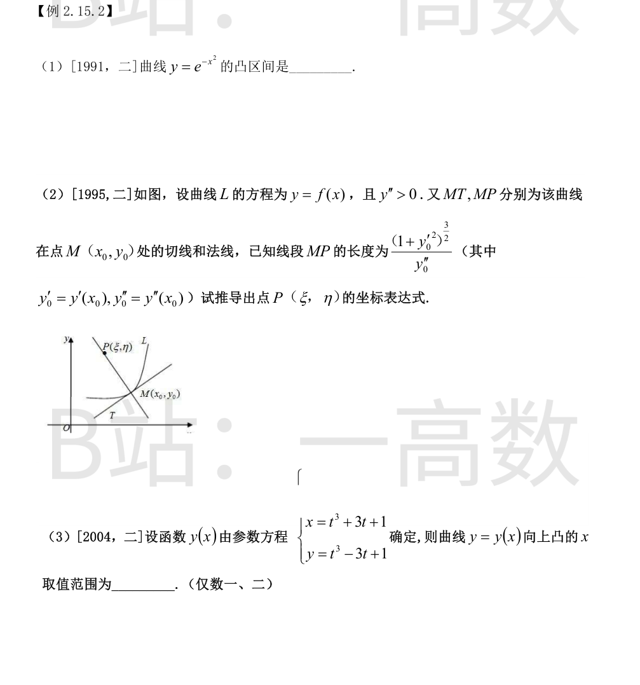
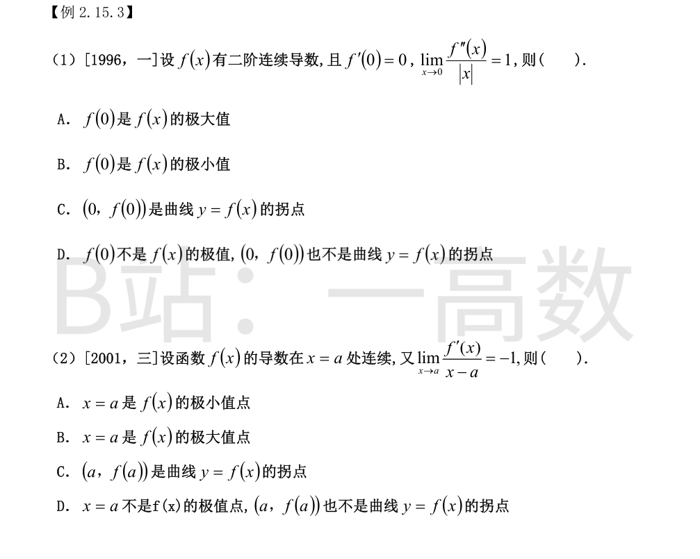
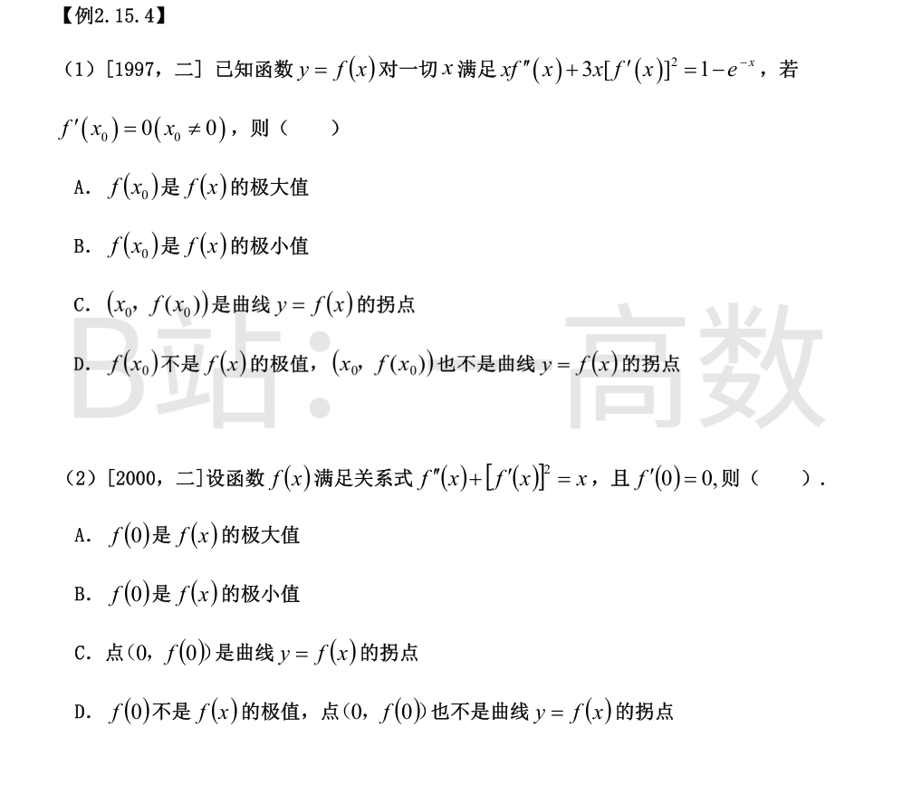
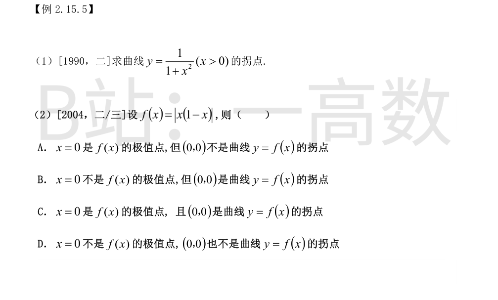
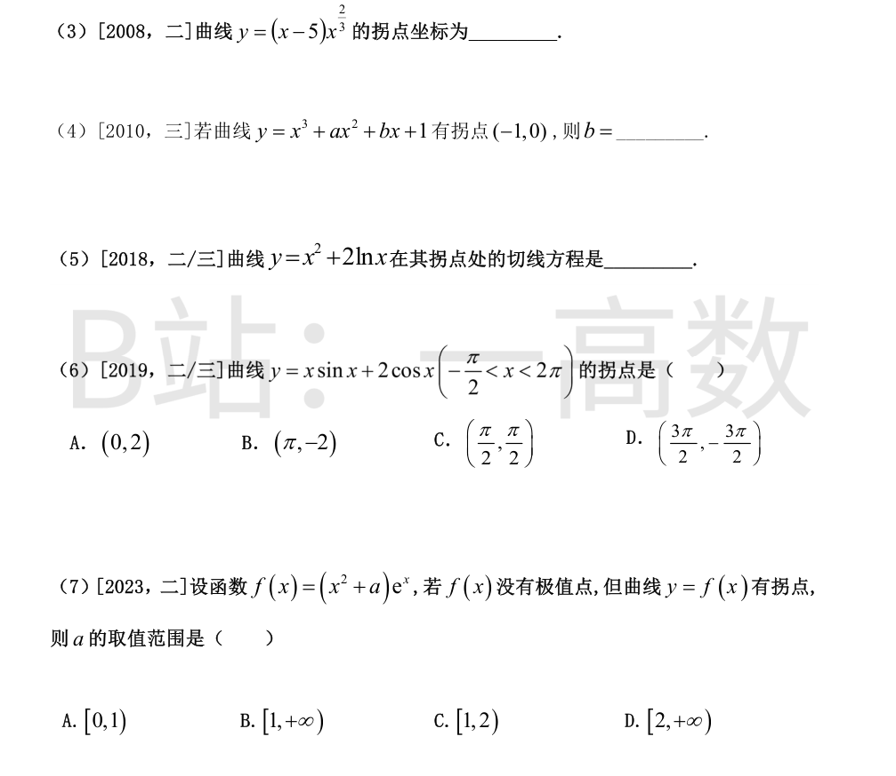
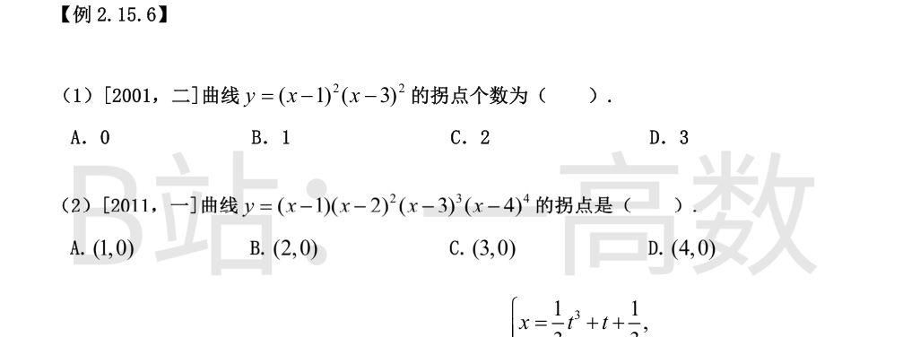
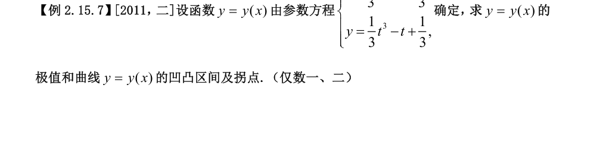
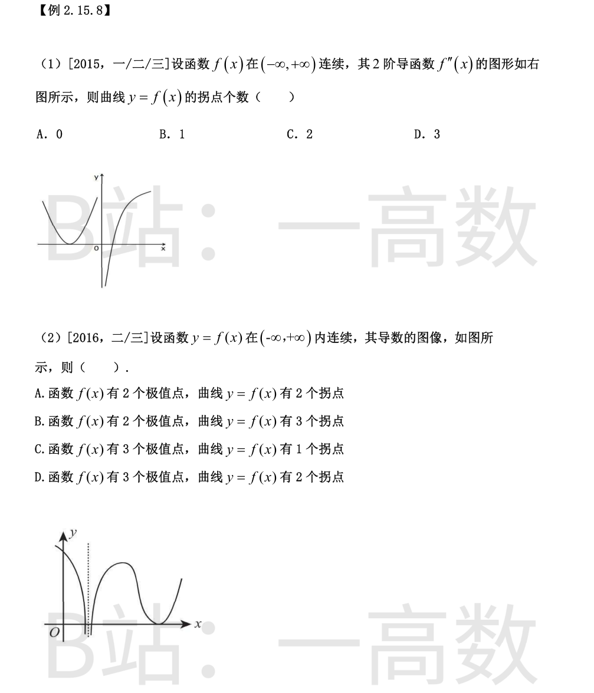

由 $f(x)=-f(-x)$ 知 $f$ 为奇函数。两边对 $x$ 求导：
$$-f'(-x)=-f'(x)\;\Rightarrow\; f'(-x)=f'(x),$$
即 $f'$ 为偶函数；再求导得 $-f''(-x)=f''(x)$，即 $f''(x)=-f''(-x)$，$f''$ 为奇函数。
于是当 $x\in(-\infty,0)$ 时（此时 $-x\in(0,+\infty)$，已知 $f'(-x)>0,\ f''(-x)>0$）：
$$f'(x)=f'(-x)>0,\qquad f''(x)=-f''(-x)<0.$$
几何验证：奇函数图象关于原点对称，右侧增且为凹弧（$f''>0$），则左侧增且为凸弧（$f''<0$），如 $y=x^3$。
故选 C。
由 $f(-x)=f(x)$ 知 $f$ 为偶函数。两边求导：$-f'(-x)=f'(x)$，即 $f'(x)=-f'(-x)$，$f'$ 为奇函数；再求导：$-f''(-x)=f''(x)$，即 $f''(x)=f''(-x)$，$f''$ 为偶函数。
当 $x\in(0,+\infty)$ 时（已知 $f'(-x)>0,\ f''(-x)<0$）：
$$f'(x)=-f'(-x)<0,\qquad f''(x)=f''(-x)<0.$$
几何验证：偶函数图象关于 $y$ 轴对称，左半支增且凸，右半支应减且凸，如 $y=-x^2$（$x<0$ 时 $y'=-2x>0,\ y''=-2<0$；$x>0$ 时 $y'=-2x<0,\ y''=-2<0$）。
故选 C。
**A 错**：邻域内单调增加只能得 $f'(x_0)\ge 0$。反例：$f(x)=x^3$ 在 $x_0=0$ 的邻域内单调增加，但 $f'(0)=0$。
**B 对**：$f''(x_0)$ 存在 $\Rightarrow$ $f'$ 在 $x_0$ 处可导 $\Rightarrow$ $f'$ 在 $x_0$ 处连续。由连续性保号性，$f'(x_0)>0$ 时存在 $\delta>0$，使 $|x-x_0|<\delta$ 时 $f'(x)>0$，故 $f$ 在该邻域内单调增加。（这里只需 $f'$ 在 $x_0$ 连续，恰由 $f''(x_0)$ 存在保证。）
**C 错**：邻域内为凹函数只能得 $f''(x_0)\ge 0$。反例：$f(x)=x^4$ 在 $x_0=0$ 的邻域内是凹函数，但 $f''(0)=0$。
**D 错**：仅在一点 $f''(x_0)>0$ 不足以保证邻域内凹。反例：$f(x)=\dfrac{x^2}{2}+x^4\sin\dfrac{1}{x}$（$f(0)=0$）。可算得 $f'(x)=x+4x^3\sin\frac1x-x^2\cos\frac1x$，$f''(0)=\lim\limits_{x\to0}\dfrac{f'(x)}{x}=1>0$；而 $x\ne0$ 时
$$f''(x)=1+12x^2\sin\frac1x-6x\cos\frac1x-\sin\frac1x,$$
其中振荡项使 $f''$ 在 $0$ 的任何邻域内都取负值，故 $f$ 在 $x_0=0$ 的任何邻域内都不是凹函数。
故选 B。
【仲裁修正】独立校验发现分歧，经仲裁重解，以本答案为准：2022数二原题四选项已核对：A(邻域单调增⇒f'(x0)>0)反例x^3，C(邻域凹⇒f''(x0)>0)反例x^4，D(f''(x0)>0⇒邻域凹)反例x^2/2+x^4 sin(1/x)（f''(0)=1>0但f''振荡变号），均错；B对：f''(x0)存在⇒f'在x0连续⇒f'(x0)>0保号⇒邻域内单调增。solver与B均选B，A误选D，且其自述反例与结论自相矛盾。
本题只设 $f$ 在 $[-1,1]$ 上**有定义**，未设连续，逐一检验。
**(A) 错**。两侧单调性不约束 $f(0)$ 的位置。反例：$f(x)=-x\ (-1<x<0)$，$f(0)=1$，$f(x)=x\ (0<x<1)$。满足在 $(-1,0)$ 递减、$(0,1)$ 递增，但在 $0$ 的邻域内 $f(x)<f(0)=1$，$f(0)$ 不是极小值（反为极大）。若补充 $f$ 在 $x=0$ 连续，(A) 才成立。
**(B) 错**。极小值只要求邻域内 $f(x)\ge f(0)$，不蕴含单调。反例：$f(x)=x^4\left(2+\sin\dfrac{1}{x}\right)$（$f(0)=0$），则 $x\ne0$ 时 $f(x)\ge x^4>0=f(0)$，$f(0)$ 是极小值；但 $f'$ 在 $(0,1)$ 内无限次变号，$f$ 在 $(0,1)$ 内不单调。
**(C) 对**。凹函数（凸函数，chord 定义）：对 $x_1<x_2$ 及 $\lambda\in[0,1]$，$f(\lambda x_1+(1-\lambda)x_2)\le \lambda f(x_1)+(1-\lambda)f(x_2)$。任取 $-1\le x_1<x_2<1$，把 $x_2$ 表为 $x_1$ 与 $1$ 的凸组合：$x_2=\lambda x_1+(1-\lambda)\cdot1$，其中 $\lambda=\dfrac{1-x_2}{1-x_1}\in(0,1)$。由凹性
$$f(x_2)-f(1)\le \lambda\left[f(x_1)-f(1)\right].$$
两边除以 $x_2-1=\lambda(x_1-1)<0$（不等号反向）：
$$\frac{f(x_2)-f(1)}{x_2-1}\ge\frac{f(x_1)-f(1)}{x_1-1},$$
即 $g(x)=\dfrac{f(x)-f(1)}{x-1}$ 在其定义域 $[-1,1)$ 上单调递增（在 $[-1,1]$ 上按定义域理解成立）。
**(D) 错**。反例：$f(1)=0$，$f(x)=1-x\ (-1\le x<0)$，$f(x)=x-1\ (0\le x<1)$。此时 $g(x)=\dfrac{f(x)-f(1)}{x-1}$ 在 $[-1,0)$ 上恒为 $-1$、在 $[0,1)$ 上恒为 $1$，单调递增，条件满足；但检验凹性定义：取 $x=-0.5,\ y=-0.4,\ z=0$，应有 $f(y)\le\frac{z-y}{z-x}f(x)+\frac{y-x}{z-x}f(z)=0.8\times1.5+0.2\times(-1)=1.0$，而 $f(-0.4)=1.4>1.0$，凹性不成立。
故选 C。

$y=e^{-x^2}$ 在 $(-\infty,+\infty)$ 上有定义。
$$y'=-2x\,e^{-x^2},\qquad y''=(4x^2-2)\,e^{-x^2}.$$
凸弧要求 $y''<0$：$4x^2-2<0\iff |x|<\dfrac{1}{\sqrt2}=\dfrac{\sqrt2}{2}$。
故凸区间为 $\left(-\dfrac{\sqrt2}{2},\ \dfrac{\sqrt2}{2}\right)$（其外 $y''>0$ 为凹弧，$x=\pm\dfrac{\sqrt2}{2}$ 为两拐点横坐标）。
切线方向向量为 $(1,\,y_0')$，法线与其垂直。$P(\xi,\eta)$ 在过 $M$ 的法线上，即 $\overrightarrow{MP}\perp(1,y_0')$：
$$(\xi-x_0)+y_0'(\eta-y_0)=0. \tag{1}$$
又由已知
$$(\xi-x_0)^2+(\eta-y_0)^2=|MP|^2=\frac{(1+y_0'^2)^3}{y_0''^2}. \tag{2}$$
由 (1) 得 $\xi-x_0=-y_0'(\eta-y_0)$，代入 (2)：
$$(\eta-y_0)^2(1+y_0'^2)=\frac{(1+y_0'^2)^3}{y_0''^2}\;\Rightarrow\;(\eta-y_0)^2=\frac{(1+y_0'^2)^2}{y_0''^2}\;\Rightarrow\;\eta-y_0=\pm\frac{1+y_0'^2}{y_0''}.$$
因 $y_0''>0$，曲线在 $M$ 附近为凹弧（位于切线上方），由图 $P$ 位于曲线凹侧（$M$ 的左上方），取正号：
$$\eta=y_0+\frac{1+y_0'^2}{y_0''},\qquad \xi=x_0-\frac{y_0'(1+y_0'^2)}{y_0''}.$$
验证：$(\xi-x_0,\,\eta-y_0)=\dfrac{1+y_0'^2}{y_0''}\,(-y_0',\,1)$，而 $(-y_0',1)\cdot(1,y_0')=0$，确沿法线、指向凹侧，其长度为 $\dfrac{1+y_0'^2}{|y_0''|}\sqrt{1+y_0'^2}=\dfrac{(1+y_0'^2)^{3/2}}{y_0''}$，与 $|MP|$ 相符。此点即 $M$ 处的曲率中心。
$\dfrac{dx}{dt}=3t^2+3>0$，故 $x(t)$ 严格增，$t$ 与 $x$ 一一对应，且 $x(0)=1$。
$$\frac{dy}{dx}=\frac{3t^2-3}{3t^2+3}=\frac{t^2-1}{t^2+1},$$
$$\frac{d^2y}{dx^2}=\frac{\dfrac{d}{dt}\left(\dfrac{t^2-1}{t^2+1}\right)}{\dfrac{dx}{dt}}=\frac{\dfrac{2t(t^2+1)-(t^2-1)\cdot2t}{(t^2+1)^2}}{3(t^2+1)}=\frac{4t}{3(t^2+1)^3}.$$
向上凸即 $\dfrac{d^2y}{dx^2}<0\iff t<0$。由 $x=t^3+3t+1$ 严格递增且 $x(0)=1$，$t<0\iff x<1$。
故向上凸的 $x$ 取值范围为 $(-\infty,\ 1)$。

因 $f''$ 连续且 $\lim\limits_{x\to0}\dfrac{f''(x)}{|x|}=1>0$，由保号性存在 $\delta>0$，当 $0<|x|<\delta$ 时 $\dfrac{f''(x)}{|x|}>\dfrac12>0$；此时 $|x|>0$，故
$$f''(x)>0,\qquad 0<|x|<\delta.$$
于是 $f'$ 在 $(-\delta,\delta)$ 上严格增（$x=0$ 处由连续性衔接）。结合 $f'(0)=0$：
$$x\in(-\delta,0):\ f'(x)<0;\qquad x\in(0,\delta):\ f'(x)>0.$$
$f$ 先减后增，$f(0)$ 为极小值；又 $f''$ 在 $x=0$ 两侧恒正、不变号，$(0,f(0))$ 不是拐点。选 B。
由 $f'$ 在 $x=a$ 连续：
$$f'(a)=\lim_{x\to a}f'(x)=\lim_{x\to a}\left[\frac{f'(x)}{x-a}\cdot(x-a)\right]=(-1)\cdot0=0.$$
又 $\lim\limits_{x\to a}\dfrac{f'(x)}{x-a}=-1<0$，由保号性存在 $\delta>0$，当 $0<|x-a|<\delta$ 时 $\dfrac{f'(x)}{x-a}<0$，于是
$$x\in(a-\delta,a):\ x-a<0\Rightarrow f'(x)>0;\qquad x\in(a,a+\delta):\ x-a>0\Rightarrow f'(x)<0.$$
$f$ 在 $a$ 左侧增、右侧减，$x=a$ 是极大值点。选 B。

将 $x=x_0$ 代入恒等式，注意 $f'(x_0)=0$：
$$x_0f''(x_0)+3x_0[f'(x_0)]^2=1-e^{-x_0}\;\Rightarrow\; x_0f''(x_0)=1-e^{-x_0}\;\Rightarrow\; f''(x_0)=\frac{1-e^{-x_0}}{x_0}.$$
- 若 $x_0>0$：$e^{-x_0}<1$，分子 $1-e^{-x_0}>0$，故 $f''(x_0)>0$；
- 若 $x_0<0$：$e^{-x_0}>1$，分子 $1-e^{-x_0}<0$，分母 $x_0<0$，仍有 $f''(x_0)>0$。
恒有 $f''(x_0)>0$，由极值第二充分条件，$f(x_0)$ 是 $f(x)$ 的极小值。选 B。
由关系式
$$f''(x)=x-[f'(x)]^2,\qquad f''(0)=0.$$
**(1) $f'''(0)$ 存在**：
$$f'''(0)=\lim_{x\to0}\frac{f''(x)-f''(0)}{x}=\lim_{x\to0}\left[1-\frac{(f'(x))^2}{x}\right].$$
因 $f'(0)=0,\ f''(0)=0$，由 Peano 余项泰勒公式 $f'(x)=o(x)$，故 $\dfrac{(f'(x))^2}{x}=o(x)\to0$，得 $f'''(0)=1>0$。
**(2) $f'$ 在 $0$ 附近的符号**：对 $f'$ 展开到二阶，
$$f'(x)=f'(0)+f''(0)x+\frac{f'''(0)}{2}x^2+o(x^2)=\frac{x^2}{2}+o(x^2)>0\quad(0<|x|\ \text{充分小}).$$
故 $f$ 在 $x=0$ 两侧都严格增，$x=0$ **不是**极值点（排除 A、B）。
**(3) $f''$ 在 $0$ 附近的符号**：
$$f''(x)=x-[f'(x)]^2=x+o(x),$$
故充分小时 $x<0\Rightarrow f''(x)<0$（凸），$x>0\Rightarrow f''(x)>0$（凹），$f''$ 在 $x=0$ 两侧变号，且 $f$ 连续，故 $(0,f(0))$ 是拐点。
选 C。


$$y'=-\frac{2x}{(1+x^2)^2},\qquad y''=\frac{-2(1+x^2)^2+8x^2(1+x^2)}{(1+x^2)^4}=\frac{2(3x^2-1)}{(1+x^2)^3}.$$
令 $y''=0$ 得 $x^2=\dfrac13$，取 $x=\dfrac{1}{\sqrt3}=\dfrac{\sqrt3}{3}$（限定 $x>0$）。当 $0<x<\dfrac{\sqrt3}{3}$ 时 $y''<0$（凸），$x>\dfrac{\sqrt3}{3}$ 时 $y''>0$（凹），凹凸性改变。
$$y\left(\tfrac{1}{\sqrt3}\right)=\frac{1}{1+\tfrac13}=\frac34.$$
故拐点为 $\left(\dfrac{\sqrt3}{3},\ \dfrac34\right)$。
在 $x=0$ 附近 $1-x>0$，故 $f(x)=|x|\,(1-x)$。
**极值**：$x\ne0$ 充分小时 $f(x)>0=f(0)$，故 $x=0$ 是（极小值）极值点。
**凹凸**：$-1<x<0$ 时 $f(x)=-x(1-x)=-x+x^2$，$f''=2>0$（凹）；$0<x<1$ 时 $f(x)=x(1-x)=x-x^2$，$f''=-2<0$（凸）。$f$ 在 $x=0$ 处连续，且两侧凹凸性改变，故 $(0,0)$ 是拐点。
选 C。
$$y'=x^{2/3}+\frac{2}{3}(x-5)x^{-1/3}=x^{-1/3}\left[x+\frac23(x-5)\right]=\frac53(x-2)x^{-1/3}\quad(x\ne0),$$
$$y''=\frac53\left[x^{-1/3}-\frac13(x-2)x^{-4/3}\right]=\frac53\,x^{-4/3}\left[x-\frac{x-2}{3}\right]=\frac{10}{9}(x+1)\,x^{-4/3}.$$
$x^{-4/3}=\dfrac{1}{(\sqrt[3]{x})^4}>0$（$x\ne0$），故 $y''$ 的符号由 $x+1$ 决定：$x<-1$ 时 $y''<0$（凸），$x>-1$ 时 $y''>0$（凹），在 $x=-1$ 处变号；$x=0$ 处 $y''$ 不存在但两侧同号（均为正），不是拐点。
$y(-1)=(-1-5)\cdot(-1)^{2/3}=-6\cdot1=-6$。
故拐点坐标为 $(-1,\ -6)$。
拐点在曲线上：$y(-1)=-1+a-b+1=a-b=0\Rightarrow a=b$。
拐点处 $y''=0$：$y''=6x+2a$，$y''(-1)=-6+2a=0\Rightarrow a=3$。
故 $b=a=3$。（三次多项式的 $y''=6x+2a$ 是一次函数，其零点两侧必变号，确为拐点，条件自洽。）
定义域 $x>0$。
$$y'=2x+\frac2x,\qquad y''=2-\frac{2}{x^2}=\frac{2(x^2-1)}{x^2}.$$
$x>0$ 时 $y''=0\iff x=1$，且 $0<x<1$ 时 $y''<0$（凸），$x>1$ 时 $y''>0$（凹），故拐点横坐标 $x=1$，$y(1)=1+2\ln1=1$。
切线斜率 $k=y'(1)=2+2=4$，切线方程
$$y-1=4(x-1),\quad\text{即}\ y=4x-3.$$
$$y'=\sin x+x\cos x-2\sin x=x\cos x-\sin x,$$
$$y''=\cos x-(\cos x-x\sin x)=-x\sin x.$$
区间 $\left(-\tfrac{\pi}{2},\,2\pi\right)$ 内 $y''=0$ 的根：$x=0$ 或 $\sin x=0\Rightarrow x=\pi$（$x=2\pi$ 不在开区间内）。
- **$x=0$ 两侧**：$x<0$ 时 $-x>0,\ \sin x<0\Rightarrow y''<0$；$x>0$ 时 $-x<0,\ \sin x>0\Rightarrow y''<0$。不变号，非拐点。
- **$x=\pi$ 两侧**：$\tfrac{\pi}{2}<x<\pi$ 时 $-x<0,\ \sin x>0\Rightarrow y''<0$；$\pi<x<2\pi$ 时 $-x<0,\ \sin x<0\Rightarrow y''>0$。变号，是拐点。
$y(\pi)=\pi\sin\pi+2\cos\pi=-2$。故拐点为 $(\pi,-2)$，选 B。
$$f'(x)=(2x+x^2+a)e^x=(x^2+2x+a)e^x,$$
$$f''(x)=(2+2x)e^x+f'(x)=(x^2+4x+a+2)e^x.$$
**无极值点 $\iff f'$ 不变号**。$x^2+2x+a=(x+1)^2+(a-1)$：
- $a\ge1$：$f'\ge0$ 恒成立（$a=1$ 时仅在 $x=-1$ 处为零），$f$ 单调不减，无极值；
- $a<1$：$f'$ 有两个零点且由负变正，$f$ 有极小值。
故无极值点 $\iff a\ge1$。
**有拐点 $\iff f''$ 变号**。$x^2+4x+(a+2)=0$ 有两个不同实根 $\iff \Delta=16-4(a+2)=8-4a>0\iff a<2$。此时 $f''$（开口向上的二次函数乘 $e^x>0$）在两根处先由正变负、再由负变正，得两个拐点；$a=2$ 时 $f''=(x+2)^2e^x\ge0$ 不变号，无拐点。
故有拐点 $\iff a<2$。
综上 $1\le a<2$，选 C。

$y=[(x-1)(x-3)]^2=(x^2-4x+3)^2$。
$$y'=2(x^2-4x+3)(2x-4)=4(x^2-4x+3)(x-2),$$
$$y''=4\left[2(x-2)^2+(x^2-4x+3)\right]=4(3x^2-12x+11).$$
令 $y''=0$：$3x^2-12x+11=0$，$x=\dfrac{12\pm\sqrt{144-132}}{6}=2\pm\dfrac{\sqrt3}{3}$，为两个不同实根；该二次函数开口向上，在每个根处各变号一次。
故曲线有 2 个拐点，选 C。
在各零点处写 $y=(x-a)^m\varphi(x)$（$\varphi(a)\ne0$ 连续），$y''$ 在 $x=a$ 附近的主部：
- $m=1$：$y''=2\varphi(a)+o(1)$，不变号；
- $m=2$：$y''=2\varphi(a)+O(x-a)$，不变号；
- $m=3$：$y''=6(x-a)\varphi(a)+O((x-a)^2)$，**变号**；
- $m=4$：$y''=12(x-a)^2\varphi(a)+O((x-a)^3)$，不变号。
逐一检验：
- $x=1$（单重）：$\varphi(1)=(-1)^2(-2)^3(-3)^4=1\cdot(-8)\cdot81=-648\ne0$，$m=1$，不变号，非拐点；
- $x=2$（二重）：$\varphi(2)=1\cdot(-1)^3\cdot2^4=-16\ne0$，$m=2$，不变号，非拐点；
- $x=3$（三重）：$\varphi(3)=2\cdot1^2\cdot(-1)^4=2>0$，$m=3$，$y''$ 在 $x=3$ 两侧变号，$(3,0)$ 是拐点；
- $x=4$（四重）：$\varphi(4)=3\cdot2^2\cdot1=12>0$，$m=4$，$y''\ge0$ 不变号，非拐点。
故拐点只有 $(3,0)$，选 C。

$$\frac{dx}{dt}=\frac32t^2+1>0,$$
故 $t\mapsto x$ 严格增，$t=0$ 对应 $x=\dfrac12$。
$$\frac{dy}{dx}=\frac{t^2-1}{\frac32t^2+1}=\frac{2(t^2-1)}{3t^2+2},$$
$$\frac{d^2y}{dx^2}=\frac{\dfrac{d}{dt}\left[\dfrac{2(t^2-1)}{3t^2+2}\right]}{\dfrac{dx}{dt}}=\frac{\dfrac{20t}{(3t^2+2)^2}}{\dfrac{3t^2+2}{2}}=\frac{40t}{(3t^2+2)^3}.$$
**极值**：$\dfrac{dy}{dx}=0\iff t=\pm1$，符号表：
| $t$ | $(-\infty,-1)$ | $-1$ | $(-1,1)$ | $1$ | $(1,+\infty)$ |
|---|---|---|---|---|---|
| $y'$ | $+$ | $0$ | $-$ | $0$ | $+$ |
| 对应 $x$ | $(-\infty,-1)$ | $-1$ | $(-1,2)$ | $2$ | $(2,+\infty)$ |
故 $x=-1$ 处取极大值：$y(-1)=-\tfrac13+1+\tfrac13=1$；$x=2$ 处取极小值：$y(2)=\tfrac13-1+\tfrac13=-\tfrac13$。
**凹凸与拐点**：$\dfrac{d^2y}{dx^2}=\dfrac{40t}{(3t^2+2)^3}$ 符号同 $t$：$t<0\iff x<\dfrac12$ 时 $y''<0$，曲线向上凸；$t>0\iff x>\dfrac12$ 时 $y''>0$，曲线向下凹。$t=0$ 对应点 $\left(\dfrac12,\ \dfrac13\right)$ 处凹凸性改变，为拐点。
综上：极大值 $y(-1)=1$，极小值 $y(2)=-\dfrac13$；凸区间 $\left(-\infty,\dfrac12\right)$，凹区间 $\left(\dfrac12,+\infty\right)$；拐点 $\left(\dfrac12,\dfrac13\right)$。
【仲裁修正】独立校验发现分歧，经仲裁重解，以本答案为准：2011数二原题 x=t^3/3+t+1/3, y=t^3/3-t+1/3。d^2y/dx^2=4t/(t^2+1)^3 变号仅于 t=0，对应点 x(0)=1/3, y(0)=1/3，故拐点 (1/3,1/3)、凸(-∞,1/3)、凹(1/3,+∞)；极小值在 t=1，x(1)=5/3。solver 把极小值点 x 写成 2（应 5/3）、拐点横坐标写成 1/2（应 1/3），y 值虽对但坐标错；A、B 正确。

拐点只可能出现在 $f''$ 变号处（$f$ 连续保证变号点在曲线上有对应点）。
由图：$x<0$ 一段为开口向上、与 $x$ 轴交于两点 $a<b$（均负）的抛物线弧：
$$(-\infty,a):\ f''>0;\qquad (a,b):\ f''<0;\qquad (b,\cdots):\ f''>0.$$
$x>0$ 一段为从 $x$ 轴下方单调上升、在 $c>0$ 处穿过 $x$ 轴的曲线：$(0,c)$ 内 $f''<0$（与左侧衔接连续为负），$(c,+\infty)$ 内 $f''>0$。
于是 $f''$ 在 $x=a$（正变负）、$x=b$（负变正）、$x=c$（负变正）三处变号，各对应一个拐点，共 3 个。选 D。
【仲裁修正】独立校验发现分歧，经仲裁重解，以本答案为准：已核对2015一/二/三原题图：左侧U形弧顶点与x轴相切（f''不变号，非拐点），右侧曲线自x轴下方单调上升穿零一次；f''仅在 x=0（左正右负跳跃，f连续故为拐点）与右侧穿零处变号，共2个拐点。solver 把左弧误读为与x轴交于两点（其steps内部还自相矛盾），多算成3个；A、B 的读图与计算正确。
**极值点**：看 $f'$ 的变号零点。由图 $f'$ 有三个零点 $x_1<x_2<x_3$：
- $x_1$ 处 $f'$ 由正变负：$f$ 取极大值；
- $x_2$ 处 $f'$ 由负变正：$f$ 取极小值；
- $x_3$ 处 $f'$ 与 $x$ 轴相切，两侧 $f'\ge0$ 不变号：不是极值点。
故极值点 2 个。
**拐点**：拐点要求 $f''$（即 $f'$ 的导数）变号，即 $f'$ 的单调性改变点。由图 $f'$ 依次为：减（至第一个负极小）—增（至驼峰正极大）—减（至与 $x$ 轴相切的第二个极小值 $0$）—增，共 3 个单调性改变点，即 $f''$ 变号 3 次（$f$ 连续），故拐点 3 个。
选 B。